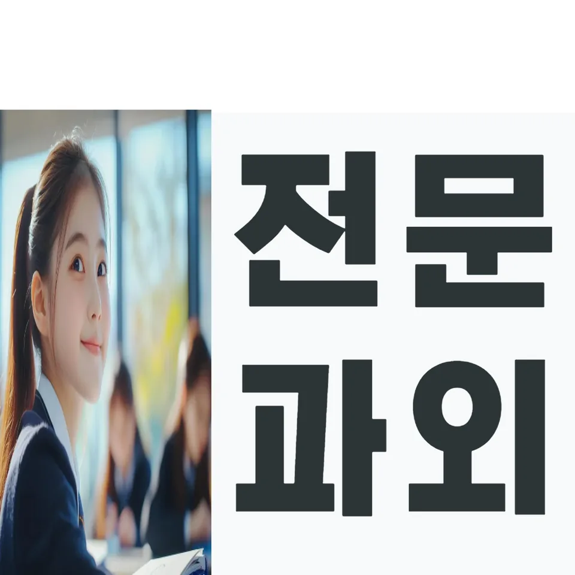

PageType : SUBJECT
URL : /경기도과외/성남시과외/분당구과외/정자동과외/정자동수학과외/
지역 교육환경이 수학 학습에 미치는 영향
정자동수학과외를 찾는 학생들 사이에서 가장 먼저 달라지는 지점은 ‘학습 분위기’입니다. 정자동수학과외 환경에 익숙한 학생은 수업 후에도 수학 시간을 자연스럽게 이어가려는 성향이 생기고, 학교에서 배운 개념을 바로 확인하려는 습관이 빨리 자리 잡습니다.
지역별로 도서관 이용이나 학원 스케줄이 촘촘한 경우, 수학 학습은 ‘끊김’보다 ‘연결’로 유지되는 편입니다. 같은 단원이어도 정자동수학과외로 학습 리듬을 잡은 학생은 예습-수업-정리-복습의 흐름을 비교적 일정하게 가져가며, 시험이 다가올수록 그 흐름이 더 또렷해집니다.
반대로 학교 일정이 촘촘해 개념 확인이 미뤄지는 학생은, 어느 순간부터는 문제만 풀고 끝내는 방식으로 기울 수 있습니다. 정자동수학과외에서는 이 시점을 놓치지 않으려는 관찰이 중요해져, 개념 이해가 약해진 뒤에도 다시 돌아가는 복습 지점이 설계됩니다.
교육 현장에서 자주 보이는 변화는 ‘수학을 좋아하는 마음’이 아니라 ‘수학을 다룰 수 있다는 감각’이 먼저 생긴다는 점입니다. 정자동수학과외를 통해 학생이 자신의 이해 상태를 점검하는 방법을 익히면, 같은 문제를 다시 봤을 때 당황하는 시간이 줄어듭니다. 그 결과 학습 과정 전반이 안정적으로 이어집니다.
학교별 평가 방식과 학습 방향
학교에 따라 내신은 필기형이 중심인 편이기도 하고, 수행평가가 수업 참여와 과정 기록을 반영하는 경우도 있습니다. 정자동수학과외는 이 차이를 전제로 학생이 무엇을 준비해야 하는지부터 정리합니다. 단순히 문제 수를 늘리는 방식보다, 학교에서 요구하는 형태의 답변과 풀이 흐름을 점검하는 쪽에 비중을 둡니다.
수행평가가 강조되는 학교에서는 ‘개념을 적용하는 과정’이 평가의 일부가 되기 때문에, 학생이 식만 세우는 태도에서 벗어나 설명과 근거를 습관화하려 합니다. 정자동수학과외에서는 학생이 스스로 말로 정리할 수 있는 수준까지 가도록 학습을 쪼개고, 수업 내용이 시험 범위와 어떻게 이어지는지 연결해 주는 방식으로 방향을 잡습니다.
또한 시험 기간이 되면 단원별 비중이 달라지는 학교도 많습니다. 이때 정자동수학과외 학습은 ‘지금 필요한 단원’과 ‘놓치면 다시 시간이 오래 걸리는 단원’을 구분해 시간을 배치합니다. 학생 입장에서는 공부습관이 흔들리지 않도록 루틴을 유지하면서도 우선순위를 조정하는 경험을 하게 됩니다.
평가가 객관식과 서술형을 함께 요구하는 학교라면, 같은 개념이라도 표현 방식이 달라져 학생이 혼란을 겪습니다. 정자동수학과외에서는 오답을 단순히 틀림으로 끝내지 않고, 학생이 어떤 단계에서 표현을 놓쳤는지까지 확인합니다.
학생들이 수학을 어려워하는 주요 원인
정자동수학과외 현장에서 반복해서 관찰되는 어려움은 ‘개념의 틈’이 문제 풀이 단계에서 드러난다는 점입니다. 학생은 문제를 풀며 막히고, 그 막힘이 계산이 부족해서인지 이해가 부족해서인지 구분하지 못할 때가 많습니다. 이때 수학은 한 번 어려워지면 회피로 이어지기 쉬워집니다.
또 다른 원인은 ‘오답을 처리하는 방식’의 차이입니다. 어떤 학생은 틀린 문제를 다시 풀지 않고 정답만 확인하며 넘어가고, 다른 학생은 왜 틀렸는지 범주화해 복습합니다. 정자동수학과외에서는 오답을 분류하는 훈련을 통해 같은 실수가 반복되는 구간을 줄이려 합니다.
학습이 늦어지는 시점도 있습니다. 보통 개념이 누적되는 시기, 혹은 학교에서 진도가 빠르게 진행되는 시기에 학생이 부담을 느끼기 시작합니다. 정자동수학과외는 이 구간에서 ‘이해-적용-확인’의 연결을 짧게 반복해, 학생이 스스로 자신의 상태를 인지하도록 만듭니다.
부모가 체감하는 고민도 대개 비슷한 흐름을 따릅니다. “시간은 쓰는데 결과가 잘 안 나온다”는 말이 나오면, 보통 공부습관의 질이 흔들리거나 복습이 부족한 경우가 많습니다. 정자동수학과외는 학습 시간을 늘리기보다, 학생이 실제로 이해를 점검하는 루트를 만들도록 돕습니다.
학년 변화에 따른 수학 학습의 차이
학년이 올라갈수록 수학 학습의 부담은 ‘양’보다 ‘연결 방식’에서 커집니다. 정자동수학과외에서 학생들을 만나 보면, 이전 학년에서는 개별 단원을 나눠도 이해가 유지되지만, 상위 학년이 되면 단원이 서로 영향을 주며 사고력이 요구됩니다.
초기에는 개념 이해가 부족해도 문제풀이가 어느 정도 진행되며 성적이 나오는 학생이 있습니다. 그러나 학년이 올라가면 같은 틀이라도 적용 조건이 달라져, 학생이 계산만으로 해결하려던 습관이 한계에 부딪힙니다. 정자동수학과외에서는 이 전환기를 대비해, 개념을 ‘활용하는 방법’으로 다시 정리하는 시간을 충분히 둡니다.
중간고사 이후에는 시험 준비 방식이 달라집니다. 학생이 문제 유형을 파악하면 학습이 빨라지는 것처럼 보이지만, 실제로는 틀린 이유를 고치지 않으면 속도는 곧 정체로 바뀝니다. 정자동수학과외에서는 시험 직후 복습 루틴을 정착시켜, 다음 평가에서 같은 실수가 등장하지 않도록 조절합니다.
고학년으로 갈수록 자기주도학습의 비중이 자연스럽게 커집니다. 다만 자기주도학습이 ‘혼자 많이 푸는 것’으로 오해되면 오답이 누적됩니다. 정자동수학과외는 계획적인 학습 습관이 실제로 실행되도록, 체크 포인트와 점검 시간을 함께 설계하는 방향을 택합니다.
꾸준한 학습이 실력으로 이어지는 과정
수학에서 실력은 하루의 집중보다 누적된 확인에서 만들어집니다. 정자동수학과외는 학생이 ‘오늘의 공부’가 ‘내일의 이해’로 연결되도록 복습의 형태를 정합니다. 예를 들어 같은 단원을 재방문할 때, 단순 반복이 아니라 사고의 경로를 다시 밟는 방식으로 구성됩니다.
시험이 가까워지면 학습 패턴이 달라지는 건 자연스럽습니다. 그때 많은 학생이 속도를 높이려다 오답의 질을 낮춥니다. 정자동수학과외에서는 시험 기간에도 복습과 오답 분석의 시간을 짧게 유지해, 공부의 방향이 흔들리지 않게 합니다.
시간을 효율적으로 쓰는 방법은 ‘더 하기’가 아니라 ‘어디에 멈출지 아는 것’입니다. 정자동수학과외에서는 문제 해결을 끝내는 기준을 명확히 하여, 이해가 부족한 상태로 다음 단계로 넘어가는 일을 줄입니다. 그러면 같은 학습 시간이 더 안정적으로 내신 준비에 반영됩니다.
또한 학생이 수학에 대한 자신감을 얻는 과정은 단계적입니다. 처음에는 문제를 푸는 데서 오는 안도감이 생기고, 곧이어 비슷한 유형에서 다시 성공 경험을 만들면서 자신감이 강화됩니다. 정자동수학과외는 이 과정을 오답과 복습으로 이어지게 만들어, 자신감이 감정이 아니라 이해 기반으로 굳도록 돕습니다.
문제 해결력을 키우는 학습 습관
문제 해결은 정답을 찾는 기술이 아니라, 문제를 바라보는 관점이 형성되는 과정입니다. 정자동수학과외에서는 학생이 문제를 읽고 조건을 정리한 뒤, 어떤 개념이 연결되는지 스스로 확인하도록 학습을 설계합니다. 이 과정이 반복되면 사고력이 천천히 자랍니다.
풀이를 시작하기 전 점검 습관이 생기면, 학생은 “왜 이 문제가 어려운지”를 말로 설명할 수 있습니다. 정자동수학과외는 이런 언어화 연습을 통해 단편적인 계산 실수와 개념 착각을 분리하고, 문제 해결의 구조를 잡아 줍니다.
오답이 나왔을 때도 태도가 달라집니다. 단순히 틀렸다는 감정에 머무르지 않고, 어떤 선택에서 오류가 시작되었는지 찾으면 다음 문제에서 같은 함정이 줄어듭니다. 정자동수학과외는 오답을 반복 횟수로만 해결하지 않고, 같은 실수의 원인을 분석해 학습을 조정합니다.
학생이 스스로 학습을 점검하면서 문제 해결력이 성장하면, 결과적으로 학교 수업에도 반응이 달라집니다. 수업 중에 “이 부분이 지난번에 어디서 막혔지”라는 식으로 연결이 생기고, 내신 공부가 단순 반복이 아니라 이해의 확장으로 느껴집니다.
복습과 학습 관리가 중요한 이유
복습은 성적을 위한 형식이 아니라 기억을 이해로 전환하는 과정입니다. 정자동수학과외에서는 복습을 ‘다시 푸는 일’로만 제한하지 않고, 오답과 개념 점검이 함께 움직이도록 구성합니다. 그래야 시험이 바뀌어도 학생의 대응이 흔들리지 않습니다.
학교에서 배운 내용을 당장 문제로 옮기지 못하면, 학생은 스스로를 무능하다고 느끼기 쉽습니다. 정자동수학과외는 복습 타이밍을 조절해 그 감정을 완화합니다. 이해가 식기 전에 짧게 확인하는 방식은 학습 부담을 줄이고, 공부습관의 지속성을 높입니다.
학부모가 가장 자주 묻는 부분도 ‘복습을 어떻게 관리하느냐’입니다. 정자동수학과외에서는 주간 단위로 복습 기록을 만들고, 어떤 개념이 누락됐는지, 어떤 오답이 남아 있는지 드러나게 합니다. 그러면 시험 전 몰아서 하는 공부로 인한 불안이 줄어듭니다.
자기주도학습이 자리 잡는 과정에서도 복습은 핵심입니다. 학생이 계획적인 학습 습관을 유지하려면, 복습이 단순 숙제가 아니라 자신의 성장 지표가 되어야 합니다. 정자동수학과외는 체크와 점검을 통해 학생이 “무엇이 좋아졌는지”를 확인하게 만들며, 그 결과 반복 학습의 효율이 높아집니다.
수학 학습에서 확인해야 할 핵심 요소
정자동수학과외에서 학습 점검 시 가장 먼저 보는 요소는 개념을 ‘이해했는가’가 아니라 ‘문제에서 활용되는가’입니다. 학생이 수업 내용을 자신의 말로 정리할 수 있는지, 그리고 다음 문제에서 조건을 새롭게 읽는지 확인합니다. 이 연결이 되면 내신 준비가 자연스럽게 정돈됩니다.
그다음으로는 오답의 성격을 봅니다. 계산 실수인지, 개념 오해인지, 문제 해석에서 멈췄는지에 따라 복습 방법이 달라집니다. 정자동수학과외는 오답을 다시 풀더라도 이유를 함께 다루어 반복을 줄이는 방향을 택합니다.
학습 과정에서 사고력이 성장하는지도 관찰 포인트가 됩니다. 단원별로 쉬운 문제만 모아 맞추는 방식은 오래 가지 못합니다. 정자동수학과외는 학생이 점점 더 다양한 상황에서 스스로 판단하게 만들며, 문제 해결에 필요한 시야를 넓혀 줍니다.
마지막으로 학교와 가정에서 이어지는 학습 환경이 맞물리는지 확인합니다. 수업 직후 정리 습관이 있는지, 시험 기간에도 공부습관이 유지되는지, 그리고 복습이 계획에 포함되어 있는지 점검해야 합니다. 정자동수학과외는 이런 요소를 함께 맞춰 학생마다 다른 성장 속도에 맞는 학습 흐름을 만들어 갑니다.
- 학교 수업과 시험 범위에 맞는 학습 계획을 세우고 있는지 확인합니다.
- 개념을 암기하는 데 그치지 않고 문제 해결 과정에 활용하고 있는지 점검합니다.
- 틀린 문제를 다시 풀어보며 실수의 원인을 꾸준히 분석합니다.
- 단기 성과보다 지속적인 복습과 학습 습관을 유지하고 있는지 살펴봅니다.
자주 묻는 질문
수학 학습은 언제부터 체계적으로 준비하는 것이 좋을까요?
정자동수학과외를 고려한다면, 단원이 시작될 때 개념 확인과 짧은 복습이 붙는 시점부터가 효과적입니다. 시험이 가까워진 뒤에야 정리하려고 하면 오답이 누적되기 쉽습니다.
학교 내신과 수행평가는 어떻게 함께 준비하면 좋을까요?
정답 여부만 보지 말고 수업에서 다룬 과정 기록과 표현 방식이 평가에 어떻게 반영되는지 먼저 확인한 뒤, 내신 유형으로 복습을 연결하는 흐름이 안정적입니다.
수학 개념이 부족한 학생도 학습 흐름을 따라갈 수 있을까요?
가능합니다. 중요한 건 정답을 맞추는 속도보다, 막힌 지점이 개념의 어느 부분인지 구분해 짧게 되돌아가는 복습을 만드는 것입니다. 정자동수학과외에서는 이 되돌림을 계획에 포함합니다.
문제 해결력은 어떤 과정을 통해 향상될 수 있을까요?
조건 정리, 개념 연결, 풀이 중 점검, 그리고 오답 분석이 반복될 때 사고력이 자랍니다. 정자동수학과외는 학생이 문제를 바라보는 기준을 점진적으로 확장하도록 돕습니다.
꾸준한 학습 습관은 어떻게 만들어갈 수 있을까요?
처음부터 오래가려 하기보다, 복습과 오답 점검을 짧게라도 매주 고정하는 방식이 현실적입니다. 정자동수학과외에서는 계획적인 학습 습관이 실제로 굴러가도록 확인 루틴을 함께 세웁니다.
